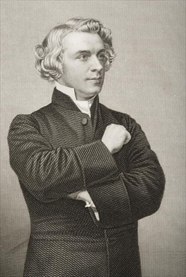
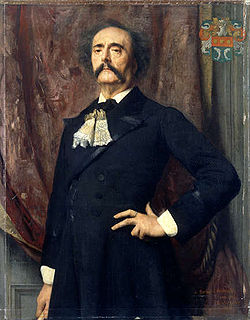

Friday, August the 20th, 2010
back to: title, date or indexes
Yesterday's crumbs of Babinskiana provoked an inundation of letters from female readers imploring me to post a picture of the Reverend John Chippendall Montesquieu Bellew, he of the head of hair like a great ball of spun white silk, so they could print it, cut it out, put it in a frame, and make it the centrepiece of a shrine at which they could adore him, as so many women did when he was—becomingly, remember—alive. I managed to track the Reverend down here, where you may note he is categorised not merely under “cassock”, “clergyman” and “Victorian” but also “arms crossed” and “keen eyed”. Et voila!

Not to be outdone, a plethora of male readers beseeched me, similarly, to post a picture of Jules Amédée Barbey d'Aurévilly, the boulevard magnifico, of the gold-knobbed cane and hand-held mirror, no doubt so they could pick up some invaluable tips on personal grooming. As always, I am happy to oblige.

Please note that these pictures are of Bellew and Barbey d'Aurévilly themselves, not of the criminal lunatic Babinsky in disguise, first as one, emerging from a hovel, then as the other, prancing off a pier.